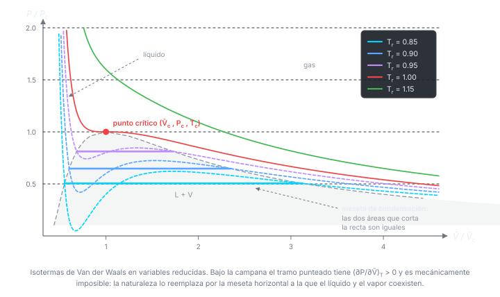
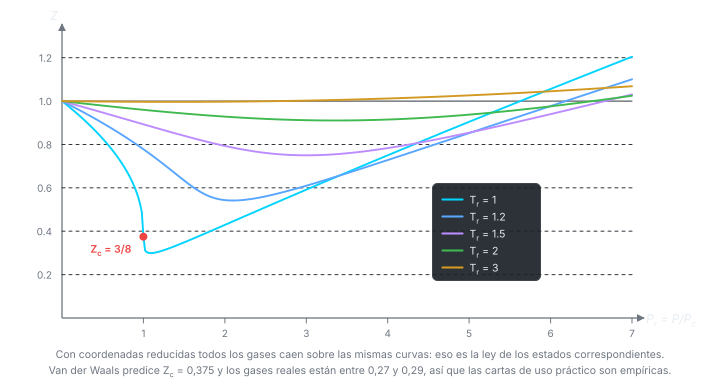

Clase 3: Punto Crítico y Ley de los Estados Correspondientes
Qué predice la ecuación de Van der Waals cuando se la exprime: temperatura de Boyle, punto crítico, y el hallazgo de que en variables reducidas todos los gases obedecen la misma ecuación.
Temas que cubre
- Desarrollo de en serie de potencias de y de
- Pendiente inicial en y qué efecto domina según su signo
- Efecto de la temperatura sobre la pendiente inicial (caso del metano)
- Temperatura de Boyle : dónde el gas real imita al ideal en un amplio rango de
- Isotermas de un gas real vs. isotermas de Van der Waals
- El punto crítico como punto de inflexión con tangente horizontal
- Constantes críticas , , en función de y (y su inversa)
- Vapor sobreenfriado y líquido sobrecalentado: los tramos no físicos de la isoterma
- Variables reducidas y ley de los estados correspondientes
- Otras ecuaciones de estado (virial, Berthelot, Redlich-Kwong, Dieterici)
Conceptos clave
Pendiente inicial de
Evaluar en deja . El signo de decide todo: positivo si domina el tamaño molecular, negativo si dominan las atracciones. Una sola expresión explica los dos comportamientos experimentales.
Temperatura de Boyle
La donde la pendiente inicial se anula: . Ahí la curva vs. es tangente a la del gas ideal en , y el gas real se comporta idealmente en un intervalo amplio de presiones. : 116,4 K · : 332 K · : 506 K · : 600 K.
Punto crítico
La isoterma tiene un punto de inflexión con tangente horizontal: primera y segunda derivada de respecto de se anulan simultáneamente. Sobre ya no hay distinción líquido–gas y no se puede licuar por compresión.
Tramos no físicos
Bajo , Van der Waals predice una zona donde — comprimir aumentaría el volumen, algo mecánicamente inestable. En la realidad ahí ocurre la coexistencia líquido–vapor a presión constante. Los tramos cercanos sí se observan como estados metaestables: vapor sobreenfriado y líquido sobrecalentado.
Variables reducidas
, , : cada gas medido en unidades de sus propias constantes críticas. Al reescribir Van der Waals en estas variables, y desaparecen.
Estados correspondientes
Dos gases a la misma y el mismo están en estados correspondientes y deben ocupar el mismo . Esto convierte a Van der Waals en una ecuación tan universal como la del gas ideal, y justifica los diagramas generalizados de vs. .
Fórmulas fundamentales






Qué hay que entender
- Todo el contenido físico de la clase cabe en el signo de : es la competencia tamaño vs. atracción, y de ahí salen y la forma de las curvas vs. .
- y implican : la temperatura de Boyle está siempre muy por encima de la crítica.
- Para hallar el punto crítico no hay que memorizar : se obtiene imponiendo que la primera y la segunda derivada se anulen. Ese cálculo es un ejercicio de control recurrente.
- es la prueba más limpia de que Van der Waals es aproximada: es un número fijo, y los gases reales no lo cumplen.
- La ley de estados correspondientes es lo que hace utilizables los diagramas generalizados de : basta y del gas para leer del mismo gráfico que todos.
- Los tramos con no son un error del modelo: señalan que ahí el sistema se separa en dos fases. La construcción de Maxwell reemplaza ese tramo por una recta horizontal.